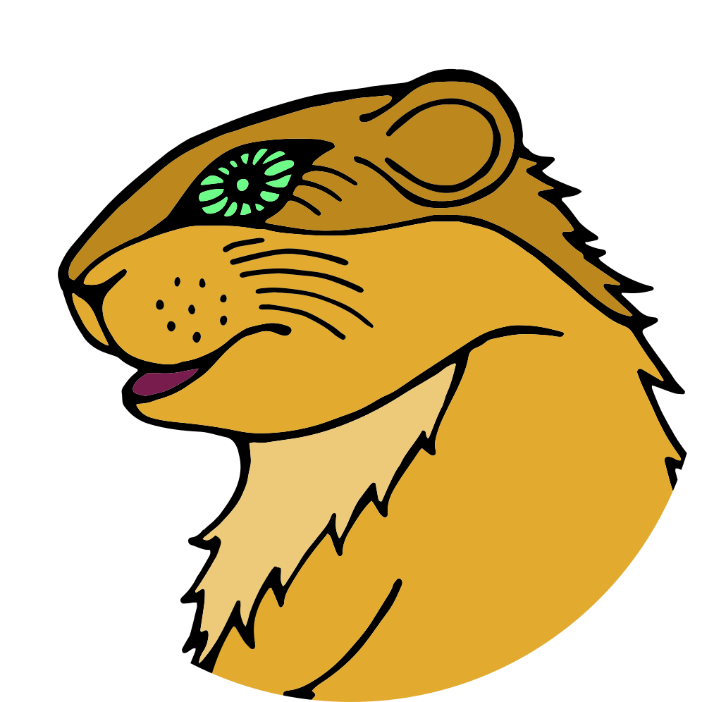
22. oddíl Svišťů
Středisko Platan, Praha
Michal Tučný
C F
1. Tenhle příběh je pravda, ať visím, jestli vám budu lhát,
G C
já jsem potkal jednu dívku a do dnešního dne ji mám rád,
F
nikdy neměla zlost, když jsem hluboko do kapsy měl,
G C
vždycky měla pochopení a já se s ní nikdy hádat nemusel.
C F
R: Když si báječnou ženskou vezme báječnej chlap,
G C
tak mají báječnej život plnej báječnejch dní bez útrap,
F
celej den jen tak sedí a popíjejí Châteauneuf-du-Pape,
G C
když si báječnou ženskou vezme báječnej chlap.
C F
2. Nikdy jsem neslyšel: kam jdeš, kdy přijdeš a kde jsi byl,
G C
a já nikdy nezapomněl, abych svoje sliby vyplnil,
F
a když vzpomínala, tak jen na to hezký, co nám život dal,
G C
nedala mi příležitost, na co bych si taky stěžoval.
R:
C
3. Tenhle příběh je pravda a sním svůj
F
klobouk jestli jsem vám lhal
G C
že jsem potkal jednu dívku a tu dívku jsem si za ženu vzal,
F
zní to jako pohádka z oříšku královny Máb,
G C
že si báječnou ženskou vzal jeden báječnej chlap.
D G
R: Když si báječnou ženskou vezme báječnej chlap,
A D
tak mají báječnej život plnej báječnejch dní bez útrap,
G
celej den jen tak sedí a popíjejí Châteauneuf-du-Pape,
A D
když si báječnou ženskou vezme báječnej chlap.
Hoboes
Ami C Ami E
1. Dneska už mně fóry ňák nejdou přes pysky,
Ami C Ami E Ami
stojím s dlouhou kravatou na bedně vod whisky,
C Ami E
stojím s dlouhým vobojkem jak stájovej pinč,
Ami C Ami E Ami A
tu kravatu, co nosím, mi navlík' soudce Lynč.
A D E A
R.:Tak kopni do tý bedny, ať panstvo nečeká,
D E A
jsou dlouhý schody do nebe a štreka daleká
D E A
do nebeskýho baru, já sucho v krku mám,
D E A Ami
tak kopni do tý bedny, ať na cestu se dám.
2. Mít tak všechny bedny od whisky vypitý,
postavil bych malej dům na louce ukrytý,
postavil bych malej dům a z vokna koukal ven
a chlastal bych tam s Bilem a chlastal by tam Ben.
R:
3. Kdyby jsi se, hochu, jen porád nechtěl rvát,
nemusel jsi dneska na týhle bedně stát,
moh' jsi někde v suchu tu svoji whisku pít,
nemusel jsi dneska na krku laso mít.
R:
4. Až kopneš do tý bedny, jak se to dělává,
do krku mi zvostane jen dírka mrňavá,
jenom dírka mrňavá a k smrti jenom krok,
má to smutnej konec a whisky ani lok.
R: .... tak kopni do tý bedny.
Michal Tučný
D D G D
1. Když Sever válčí s Jihem a zem jde do války,
D D E A
na polích místo bavlny teď rostou bodláky.
D D G D
Ve stínu u silnice vidíš z Jihu vojáky,
D D A D
jak válejí líně a louskaj' buráky.
D D G D
R: Hej hou, hej hou, nač chodit do války,
D D E A
je lepší doma sedět a louskat buráky.
D D G D
Hej hou, hej hou, nač chodit do války,
D D A D
je lepší doma sedět a louskat buráky.
D D G D
2. Plukovník je v sedle, volá:"Yankeeové jdou!",
D D E A
ale mužstvo v trávě leží, prej dál už nemohou.
D D G D
Plukovník se otočí a koukne do dálky,
D D A D
tam jeho slavná armáda teď louská buráky.
R: Hej hou...
D D G D
3. Až tahle válka skončí a jestli budem žít,
D D E A
svý milenky a ženy pak půjdem políbit.
D D G D
Když se zeptaj':"Hrdino, cos' dělal za války?"
D D A D
"Já flákal jsem se s kvérem a louskal buráky."
R: Hej hou...
Jaso ho zahlídl úplně náhodou. Malý kluk, v ruce žhnoucí větev, na tváři naprosto klidný úsměv – a míří rovnou k odpadkovému koši. Zbývaly asi tři vteřiny. Ale popořádku.
Tenkrát jsme se učili to nejzákladnější, co musí umět každý zálesák: rozdělat oheň.
Jaso ukazoval, jak březová kůra hoří, i když je úplně mokrá. Jak se z tenkých jehličnatých větviček staví základ, ze kterého se rozhoří plamen.
Každý dostal svoje místo. Každý si vyskládal ohniště z kamenů. Každý křesal svou vlastní jiskru.
Mezi dětmi byl i malý Jakub – ten, který později dostal přezdívky Tímovka, Colombo a Krisli.
Jakub se do plamenů zadíval. A v očích se mu něco rozsvítilo.
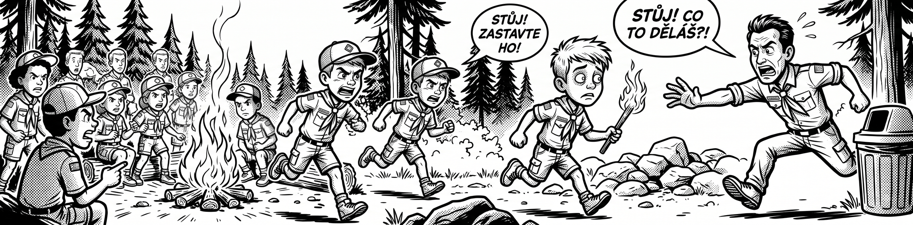
Ostatní hlídali svá ohniště. Jakub dostal nápad.
Vytáhl z ohně rozžhavenou větev, otočil se a klidným krokem vyrazil pryč z bezpečného kruhu. Nespěchal. Neschovával se. Prostě si to namířil.
Cíl byl jasný: velký plastový odpadkový koš na kraji lesní cesty.
Co myslíš, že se stane, když se rozžhavené dřevo potká s plastem?
Jakub to chtěl vědět taky.
Nezjistil to. Jaso po něm skočil a zastavil ho krok před košem.
Od té doby platilo v oddíle nepsané pravidlo: když se pracuje s ohněm, na Jakuba se dává trojnásobný pozor.
Sviští pravidlo č. 2: Oheň zůstává v ohništi. Vždycky.
Oheň se zakládá jen na schváleném ohništi obloženém kameny. Nenosí se v ruce. Neroznáší se po lese. A rozhodně se s ním nechodí k ničemu, co může chytit – k suché trávě, k jehličí, ke stromům, k plastovému koši.
Jeden krok s hořící větví může zapálit celý park.
Výzva: Až budeš příště zakládat oheň, ukaž vedoucímu své ohniště dřív, než škrtneš sirkou. Kdo to udělá, ten ohni rozumí.
Čtyřicet.
Tolik klíšťat se toho dne zakouslo do jednoho jediného skauta. A on o tom celou hodinu neměl ani tušení.
Bylo to v pátek 4. června 2021 v Hostivařském lesoparku. Oddíl tehdy hrál oblíbené outdoorové hry Schovej se u cesty a MayDay, při kterých se skauti museli maskovat v terénu a navigovat se se zavázanýma očima. Tímovka to vzal vážně. Smrtelně vážně. Vybral si nejhustší křoví, jaké v parku existovalo. Vysoká tráva, mokro, zeleno. Vlezl dovnitř, lehl si a na moment v něm nehybně zmizel. Kamufláž to byla dokonalá – nikdo ho nenašel. Jenže on sám se stal kořistí.
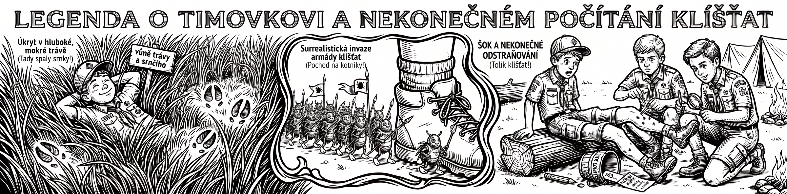
Vedoucí ho prohlédli. A pak ztichli. Dvacet klíšťat. Přímo na schůzce jich z něj vytáhli dvacet.
Oddíl si myslel, že tenhle rekord nikdo nikdy nepřekoná. Mýlil se. Překonal ho ten samý večer Tímovka sám.
Doma se ho totiž ujala maminka. A ta našla dalších dvacet.
Sviští pravidlo č.1: Nelehej si tam, kam by si lehla srnka.
Vysoká mokrá tráva je pro klíšťata pětihvězdičkový hotel. Když v ní najdeš pomačkané místo, kde vypadá, že si někdo udělal pelíšek – srnka, divočák, prase – obejdi ho velkým obloukem. Ti mají klíšťat plnou srst a rozdávají je zadarmo.
Chceš si lehnout? Najdi posekané, suché místo na slunci. Tam klíšťata do pár minut uschnou.
Výzva: Po nejbližší výpravě se doma pořádně zkontroluj. Kdo najde klíště, hlásí to na schůzce. Tímovkův rekord je 40 – a ten fakt nechceš překonat.
táborové písně
D G
1. Pod tou skálou, kde proud řeky syčí
D A
a kde ční červený kamení,
D D7 G
žije ten, co mi jen srdce ničí,
D A D
koho já ráda mám k zbláznění.
D G
2. Vím, že lásku jak trám lehce slíbí,
D A
já ho znám, srdce má děravý,
D D7 G
ale já ho chci mít, mně se líbí,
D A D
bez něj žít už mě dál nebaví.
D G
3. Často k nám jezdívá s kytkou růží,
D A
nejhezčí z kovbojů v okolí,
D D7 G
vestu má ušitou z hadích k ůží,
D A D
bitej pás, na něm pár pistolí.
D G
4. Hned se ptá, jak se mám, jak se daří,
D A
kdy mu prý už to svý srdce dám,
D D7 G
ale já odpovím, že čas maří,
D A D
srdce blíž Červený řeky mám.
Mezihra: jako sloka
E A
5. Když je tma a jdu spát, noc je černá,
E H
hlavu mám bolavou závratí,
E A
ale já přesto dál budu věrná,
E H E
dokud sám se zas k nám nevrátí.
lidové písně
Ami Dmi Ami E Ami
1. Dobrú noc, má milá, dobrú noc,
Ami Dmi Ami E Ami
nech ti je sám Pánboh na pomoc!
C G C Emi G7 C E
|: Dobrú noc, dobre spi,
Ami Dmi Ami E Ami
nech sa ti snívajú sladké sny. :|
2. Dobrú noc, má milá, dobrú noc,
nech je ti sám Pánboh na pomoc!
Dobrú noc, dobre spi,
nechsa ti snívajú o mne sny.
Buty
G, C, G, C
G C
1. Na hladinu rybníka svítí sluníčko
Emi G
a kolem stojí v hustém kruhu topoly,
Ami Hmi
které tam zasadil jeden hodný člověk,
Ami D
jmenoval se František Dobrota.
2. František Dobrota, rodák z blízké vesnice,
měl hodně dětí a jednu starou babičku,
která když umírala, tak mu řekla: Františku,
teď dobře poslouchej, co máš všechno udělat.
C D
Ref: Balabambam, balabambam....
C D
balabambam, balabambam....
C D
balabambam, balabambam....
Ami D
a kolem rybníka nahusto nasázet topoly.
G C
3. František udělal všechno, co mu řekla,
C
balabambam, balabambam
Emi G
a po snídani poslal děti do školy,
Ami Hmi
žebřiňák s nářadím dotáhl od chalupy k rybníku,
Ami D
vykopal díry a zasadil topoly.
G C
4. Od té doby vítr na hladinu nefouká,
Emi G
takže je klidná, jako velké zrcadlo,
Ami Hmi
sluníčko tam svítí, vždycky rádo
Ami D
protože v něm vidí, Františkovu babičku.
Outro 2x: G, C, Emi, G
Ami, Hmi, Ami, D
Jaromír Nohavica
D Emi A7 D
1. Daleko na severu je Grónská zem,
D Emi A7 D
žije tam Eskymačka s Eskymákem,
Emi G D
[: my bychom umrzli, jim není zima,
Emi A7 D
snídají nanuky a eskima. :]
2. Mají se bezvadně, vyspí se moc,
půl roku trvá tam polární noc,
[: na jaře vzbudí se a vyběhnou ven,
půl roku trvá tam polární den. :]
3. Když sněhu napadne nad kotníky,
hrávají s medvědy na četníky,
[: medvědi těžko jsou k poražení,
neboť medvědy ve sněhu vidět není. :]
4. Pokaždé ve středu, přesně ve dvě
zaklepe na na íglů hlavní medvěd:
[: "Dobrý den, mohu dál na vteřinu?
Nesu vám trochu ryb na svačinu." :]
5. V kotlíku bublá čaj, kamna hřejí,
psi venku hlídají před zloději,
[: smíchem se otřásá celé íglů,
neboť medvěd jim předvádí spoustu fíglů. :]
6. Tak žijou vesele na severu,
srandu si dělají z teploměrů,
[: my bychom umrzli, jim není zima,
neboť jsou doma a mezi svýma. :]
„Tohle jsou opravdové nože. Jsou hrozně ostré. Nikdy nesahejte na ostří prstem!" Jaso to dořekl. Uběhly dvě vteřiny.
Syk.
Ale popořádku. Byl podzim 2021 a rodiče dostali s předstihem úkol: pořídit dětem jejich úplně první skautský nůž. Bez nože není zálesák. Děti si je přinesly na schůzku v pouzdrech a v kapsách, hrdé jako rytíři s mečem.
Nastal ten velký okamžik. Vedoucí Jaso si vzal slovo, aby ukázal, jak se s čepelí zachází bezpečně. To hlavní pravidlo vyslovil pomalu a důrazně. A přesně v tu chvíli se v hlavách Veverky a Kalimera zapnula ta nejnebezpečnější věc na světě: dětská zvědavost.
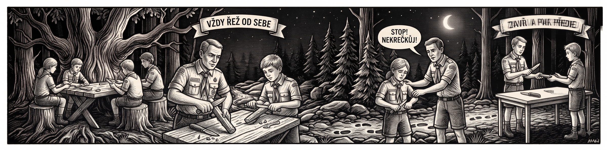
„Fakt je tak ostrý?"
Vytáhli nože. Přejeli prstem po čepeli. Jen tak. Pro jistotu. Ověřit si, jestli Jaso nekecá.
Nekecal. Ozvalo se tiché syknutí. Pak druhé. Jaso s Trixi vytáhli KPZky, rány vydezinfikovali a zalepili. Vyřezávání z lipových klacíků toho dne skončilo pro Kalimera a Veverku dřív, než pořádně začalo. Jaso od té doby přemýšlí nad jedinou otázkou: jak dětem vysvětlit, že se pravda nemusí ověřovat vlastním prstem.
Sviští pravidlo č. 3: Když vedoucí řekne „ostré", věř mu napoprvé.
Nůž není hračka. Je to nástroj dospělých. Dostal jsi ho, protože ti věří rodiče i vedoucí. S tou důvěrou přichází jediná povinnost: poslouchat pokyny a nedělat pravý opak. Ušetříš si náplast – a dokážeš, že nůž nosit můžeš.
Výzva: Poznáš tupý nůž od ostrého, aniž bys na něj sáhl? Zkus to na papíru, ne na prstu. Zeptej se vedoucího, jak se to pozná.
Lopatka narazila na něco tvrdého.
KŘÁP!
Kluci ztuhli. To nebyl kámen. Kameny takhle nezní.
Byl červenec 2022, letní tábor u Šluknova, líné odpoledne a osobní volno. Naše stany stály na klidné louce.
Nikdo netušil, že přímo pod nimi něco je.
Kdysi tu stával velký sudetoněmecký kamenný dům. Válka a čas ho srovnaly se zemí. Aspoň si to všichni mysleli.
Při toulkách po okraji tábořiště kluci našli díru v zemi. Hlubokou.
„To je nora od jezevce," prohlásil někdo. „Stopro."
Jenže skautská zvědavost je silnější než jakýkoliv jezevec. Klukům to nedalo. Vzali si polní lopatky a začali kopat.
Díra se zvětšovala. Hlína ubývala.
A pak přišlo to KŘÁP.
Posvítili baterkou dolů do tmy – a zatajil se jim dech. V hloubce se rýsovaly rovné, opracované kamenné stěny. Postavené lidskou rukou.
Co bys udělal ty? Skočil dolů – nebo běžel pro vedoucího?
Kluci se rozhodli správně. Rozběhli se s křikem za vedoucími:
„Objevili jsme podzemí! Skutečné podzemí! Můžeme tam jít?!"
Nastal čas na pořádnou průzkumnou operaci.
Právo prvního vstupu dostal ten, kdo kopal nejvíc – a byl zároveň nejmenší a nejodvážnější: Tjutju.
Vedoucí ho nenechali riskovat. Rukavice. Čelovka. Horolezecké lano kolem pasu. Ostatní drželi lano napnuté a Tjutju se pomalu spouštěl dolů, do chladu, který voněl vlhkem a osmdesáti lety ticha.
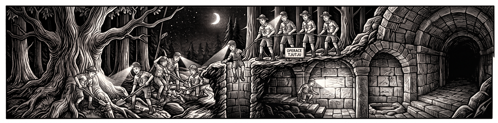
Nohy se dotkly země. Tjutju zvedl hlavu a čelovka prořízla tmu.
Stál v kamenné chodbě. Nad ním se klenul těžký strop. A o kus dál se chodba stáčela doleva – do naprosté černé tmy.
A přesně tehdy ho to napadlo: co když za tím rohem něco je?
Ze šachty vyletěl ven jako blesk.
„Ono to tam pokračuje!" lapal po dechu. „Jde to dál! Jsou tam obří prostory!"
Dolů se hned nato spustil Jaso. A potvrdil, co Tjutju viděl: pod naším táborem se skrýval celý zachovalý sklepní systém starého sudetského domu. Žulové kvádry, kamenné klenby a v rohu malý kamenný bazének na vodu.
Spali jsme čtrnáct dní přímo nad zapomenutou historií.
Sviští pravidlo č. 4: Do díry v zemi se nikdy neleze samo.
Podzemní prostory umí být smrtelně nebezpečné. Můžou v nich být jedovaté plyny, které necítíš. Strop starý sto let se může utrhnout. Podlaha se může propadnout.
Tjutju byl hrdina ne proto, že slezl dolů – ale proto, že to udělal s lanem, s čelovkou, v rukavicích a s vedoucím nahoře.
Výzva: Objevovat historii je skvělé. Vrátit se z ní nahoru na sluníčko je ještě lepší. Když něco najdeš, první krok je vždycky: běž to říct.
Jaromír Nohavica
Ref: D G A D
2x
D
1. Když jsem byl malý, říkali mi naši,
dobře se uč a jez chytrou kaši,
G A D
až jednou vyrosteš, budeš doktorem práv.
D
Takový doktor si sedí pěkně v suchu,
bere velký peníze a škrábe se v uchu,
G A D
já jim ale na to řek, chci být hlídačem krav."
D
Ref: Já chci mít čapku s bambulí nahoře,
jíst kaštany, mýt se v lavoře,
G A D
od rána po celý den zpívat si jen.
D
Zpívat si: Pam, pam, pa, dam, pam, pa, dada,
G
pam, pam, pa, dam, pam, pa, dada, dada, dadam,
A D
padadadam, padadadam.
D
2. K vánocům mi kupovali hromady knih,
co jsem ale vědět chtěl, to nevyčet' jsem z nich,
G A D
nikde jsem se nedozvěděl, jak se hlídají krávy.
D
Ptal jsem se starších a ptal jsem se všech,
každý na mě hleděl jako na pytel blech,
G A D
každý se mě opatrně tázal na moje zdraví.
Ref:
D
3. Dnes už jsem starší a vím, co vím,
mnohé věci nemůžu a mnohé smím,
G A D
a když je mi velmi smutno, lehnu si do mokré trávy.
D
S nohama křížem a s rukama za hlavou,
koukám nahoru na oblohu modravou,
G A D
kde se mezi mraky honí moje strakaté krávy. (+ Ref: 2x)
Petr Kotvald, Stanislav Hložek
D G A
1. Majdalenka, Apolenka s Veronikou
D G A
A taky Věrka, Zdeňka, Majka, Lenka s Monikou
D G A
No jasně Klára, Ančí, Bára, Mančí už nevím čí
D G C A
To všechno byly holky z naší školky senzační.
D A G A D G
R1. Jé, jé, jé - kdepak ty fajn holky jsou
D G
A kde maj hračky svý
Asus4 A
Ty naše lásky tříletý
D A G A D G
Pá, pá, pá - řekli jsme pá před školkou
D G
Bylo nám právě šest
Asus4 A
A začlo další dívčí šou.
D G A
2. Ve škole Daniela, Michaela s Romanetou
D G A
A taky Adriana, Mariana se Žanetou
D G A
A hlavně prima Radka, kamarádka, co všechno ví
D G C A
Tyhlety holky byly naše víly školních dní.
D A G A D G
R2. Jé, jé, jé - kdepak ty fajn holky jsou
D G
A kde maj v žákovský
Asus4 A
Naše lásky klukovský
D A G A D G
Čau, čau, čau - řekli jsme čau před školou
D G
Táhlo nám na patnáct
Asus4 A
A začlo další dívčí šou.
D G A
3. Na gymplu bezva Šárka, třída Klárka, Táňa jak sen
D G A
A taky senza Jenka v podkolenkách, veselá jen
D G A
A všechny v sexy tričku postavičku měli ham ham
D G C A
No prostě prima štace, inspirace k maturám.
D A G A D G
R3. Jé, jé, jé - kdepak ty fajn holky jsou
D G
A kde maj zazděný
Asus4 A
Ty naše lásky vysněný
D A G A D G
Au, au, au - vzdychli jsme au, čau a pá
D G
Už se dál nekoná
Asus4 A
Žádná dívčí školní šou.
D G A
4. I když pak poznali jsme spoustu dalších dívek a jmen
D G A
Plavovlásky, černovlásky, žár i sen
D G A
V rytmu diska, z dálky - zblízka, i v náručí
D G C A
Přesto jsou stále holky z naší školky nejhezčí.
D A G A D G
R4. Jé, jé, jé - kdepak ty fajn holky jsou
D G
A kde maj cůpky svý
Asus4 A
Ty naše lásky tříletý
D A G A D G
Pá, pá, pá - říkáme dál před školkou
D G
To se ví, léta jdou
Asus4 A
Ale ty holky nestárnou.
Žalman
D C D
1. Spinkej, můj maličký, máš v očích hvězdičky,
C G D
dám ti je do vlasů, tak usínej, tak usínej.
D C D C G D
Ref: Ho ho Watanay, ho ho Watanay, ho ho Watanay, kiokena, kiokena.
2. Sladkou vůni nese ti noční motýl z paseky,
vánek ho kolíbá, už nezpívá, už nezpívá.
Ref: Ho ho Watanay, ho ho Watanay, ho ho Watanay, kiokena, kiokena.
3. V lukách to zavoní, rád jezdíš na koni
má barvu havraní, jak uhání, jak uhání.
Ref: Ho ho Watanay, ho ho Watanay, ho ho Watanay, kiokena, kiokena.
4. V dlani motýl usíná, hvězdička už zhasíná,
vánek, co ji k tobě nes, až do léta ti odlétá.
Ref: Ho ho Watanay, ho ho Watanay, ho ho Watanay, kiokena, kiokena.
Ho ho Watanay, ho ho Watanay, ho ho Watanay, kiokena, kiokena.
Premiér
D 1. V mládí jsem se učil hrobařem, Hmi jezdit s hlínou, jezdit s trakařem, G A7 kopat hroby byl můj ideál. 2. Jezdit s hlínou, jezdit s vozíkem, s černou rakví, s bílým pomníkem, toho bych se nikdy nenadál. 3. Že do módy přijde kremace, černý hrobař bude bez práce, toho bych se nikdy nenadál. 4. Kolem projel vůz milionáře, záblesk světel pad' mi do tváře, marně skřípěj' kola brzdící. 5. Stoupám vzhůru, stoupám ke hvězdám, tam se s černou rakví neshledám, sbohem, bílé město zářící. 6. Sbohem, moje město, vzpomínat budu přesto, jak jsem poznal tvůj smích a tvůj pláč. 7. Na na na ...
Ne leknutí. Křik, jako když někoho drají z kůže.
A hned za ním, přes celé údolí: „JASOOO!"
V chatě ztuhla krev v žilách všem. Noční zkouška odvahy měla být jednoduchá. Krátký lesní okruh, který začínal i končil u chaty. Na stromech odrazky – malé kouzelné body, které se v temnotě rozsvítí, jakmile na ně dopadne paprsek z čelovky.
Prostě jdi, sviť, sleduj odrazky, vrať se. První skauti prošli okruh bez problémů.
Pak do tmy vykročila Mráček. Minuty se vlekly. Mráček se nevracela. Les jako by spolkl všechen zvuk.
Až najednou ten křik.
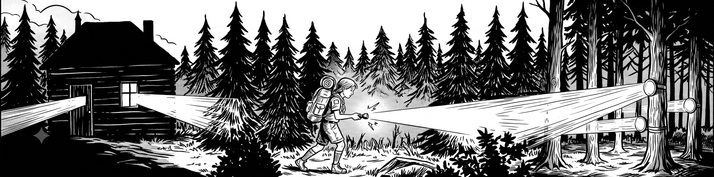
Všichni vyrazili ven. Kluci a holky, s baterkami v rukou, s bušícím srdcem. Jedna skupina po trase zepředu, druhá zezadu, probíjeli se houštím a křičeli do tmy: „Jdeme! Jdeme za tebou!"
Našli ji roztřesenou a uplakanou.
„Já jsem se tak strašně bála," vzlykala. „Vždyť tu dneska nejsou žádné odrazky!"
Vedoucí beze slova zvedl ruku a posvítil baterkou do lesa. Les se rozzářil jako vánoční stromeček. Odrazky tam byly. Všechny. Přesně tam, kde měly být.
Problém byl jinde. Mráček si totiž před odjezdem nezkontrolovala čelovku. A tátovi se den předtím hodila na ryby.
Do nočního lesa vyšla s téměř vybitou baterkou. Byla ztracená v lese, kde na každém druhém stromě visela její záchrana. Jen na ni nemohla posvítit.
Sviští pravidlo č. 5: Věc v batohu ještě neznamená, že funguje.
Čelovka v batohu je k ničemu, když je vybitá. Zápalky v KPZce jsou k ničemu, když jsi je spálil na minulém táboráku. A padesátikoruna na nouzi tě nezachrání, když jsi ji utratil za pizzu.
Nestačí věci sbalit. Musíš je zkontrolovat.
Když se ztratíš, křič jako Mráček a najdeme tě.
Výzva: Večer před další výpravou vytáhni čelovku, zapni ji a nech ji minutu svítit. Pak projdi KPZku, kus po kuse. Trvá to pět minut a jednou ti to zachrání večer.
Existuje zvuk, který v lese nechceš nikdy slyšet.
Křupnutí.
Toho dne k němu chybělo strašně málo.
Byla sychravá jarní sobota, když náš oddíl dorazil do skalního labyrintu Prachovských skal. Nebe se zatáhlo, spustil se studený déšť a pískovec potemněl. Skály se pokryly slizem. Pěšiny se změnily v blátivou skluzavku.
A přesně v takové chvíli se ukáže, kdo se sbalil dobře.
Vydra a Skunk tehdy vyrazili do skal v tenkých teniskách. V těch samých, ve kterých chodí do školy a po asfaltu.
Okamžitě jsme pro ně vymysleli vědecký název: Drifťáky.
A na mokrém pískovci to byl skutečně drift.
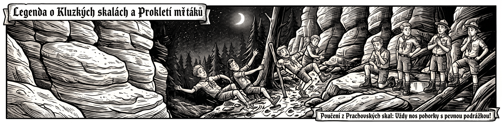
Podrážka bez vzorku klouzala po každém centimetru. Noha v botě plavala jako v mýdlové vodě. A když přišla únava, svaly přestaly držet – kotníky se v měkkých teniskách začaly prolamovat do stran.
Jeden špatný krok na oblé skále. Jeden mokrý kořen.
A křup.
Zatímco skauti v pořádných pohorkách procházeli kolem jako kamzíci, majitelé Drifťáků balancovali s roztaženýma rukama nad srázem a v očích měli čisté zoufalství.
Domů jsme se tehdy vrátili bez sádry. Ale bylo to o vlas.
Sviští pravidlo č. 6: Do skal jen ve vysokých pohorkách. Bez výjimky.
Správná bota má tlustou podrážku se vzorkem – ta se na mokré skále nesmekne a udrží tě na blátě i na sypkém písku. A vysoký svršek ti drží kotník, takže když šlápneš na křivý kořen, nezlomíš si nohu.
Tenisky do skal nepatří. Ani ty drahé. Ani ty nové.
Výzva: Před příští výpravou si stoupni před rodiče a ukaž jim seznam výbavy z oddílových dokumentů. To, co si zabalíš, je tvoje zodpovědnost – ne jejich.
Wabi Daněk
Am C
1. Ten, kdo nezná hukot vody lopatkama vířený,
G Am
jako já, jó jako já,
Am G
kdo Hudsonský slapy nezná sírou pekla sířený,
Am G Am G Am
ať se na Hudsonský šífy najmout dá, jo-ho-ho.
Am C
2. Ten, kdo nepřekládal uhlí, šíf když na mělčinu vjel,
G Am
málo zná, málo zná,
Am G
ten, kdo neměl tělo ztuhlý, až se nočním chladem chvěl,
Am G Am G Am
ať se na Hudsonský šífy najmout dá, jo-ho-ho.
F Am G Am
Ref: Ahoj, páru tam hoď, ať do pekla se dříve dohrabem,
G Am G Am
jo-ho-ho, jo-ho-ho.
Am C
3. Ten, kdo nezná noční zpěvy zarostenejch lodníků,
G Am
jako já, jó jako já,
Am G
ten, kdo cejtí se bejt chlapem, umí dělat rotyku,
Am G Am G Am
ať se na Hudsonský šífy najmout dá, jo-ho-ho.
Am C
4. Ten, kdo má na bradě mlíko, kdo se rumem neopil,
G Am
málo zná, jó málo zná,
Am G
kdo necejtil hrůzu z vody, kde se málem utopil,
Am G Am G Am
ať se na Hudsonský šífy najmout dá, jo-ho-ho.
F Am G Am
Ref: Ahoj, páru tam hoď, ať do pekla se dříve dohrabem,
G Am G Am
jo-ho-ho, jo-ho-ho.
Am C
5. Kdo má roztrhaný boty, kdo má pořád jenom hlad,
G Am
jako já, jó jako já,
Am G
kdo chce celý noci čuchat pekelnýho vohně smrad,
Am G Am G Am
ať se na Hudsonský šífy najmout dá, jo-ho-ho.
Am C
6. Kdo chce zhebnout třeba zejtra, komu je to všechno fuk,
G Am
kdo je sám, jó jako já,
Am G
kdo má srdce v správným místě, kdo je prostě príma kluk,
Am G Am G Am
ať se na Hudsonský šífy najmout dá, jo-ho-ho.
F Am G Am
Ref: Ahoj, páru tam hoď, ať do pekla se dříve dohrabem,
G Am G Am
jo-ho-ho, jo-ho-ho,
G Am G Am
jo-ho-ho, jo-ho-ho.
táborové písně
D
1. Chodím po Broadwayi hladov sem a tam,
A
Chodím po Broadwayi hladov sem a tam,
D G
chodím po Broadwayi, po Broadwayi,
D A D
po Broadwayi hladov sem a tam.
D
R: Singi jou jou jupí jupí jou,
A
singi jou jou jupí jupí jou,
D G
singi jou jou jupí, pes má chlupy,
D A D
kočka srst, a prase štětiny.
2. [: Moje černé děti mají stále hlad, :]
moje černé děti, černé děti,
černé děti mají stále hlad.
R: Singi jou jou...
3. [: Práci nedostanu, černou kůži mám, :]
práci nedostanu, nedostanu,
protože já černou kůži mám.
R: Singi jou jou...
4. [: A já pevně věřím, že zas přijde den, :]
a já pevně věřím, pevně věřím,
že zas bude černoch svoboden.
R: Singi jou jou...
Ivan Mládek
Emi H7 Emi
1. Jedu takhle tábořit Škodou 100 na Oravu,
H7 Emi
spěchám proto, riskuji, projíždím přes Moravu.
D7 G D7 G H7
Řádí tam to strašidlo, vystupuje z bažin,
Emi H7 Emi D7
žere hlavně Pražáky, jmenuje se Jo-žin.
G D7
R: Jožin z bažin močálem se plíží,
G
Jožin z bažin k vesnici se blíží,
D7
Jožin z bažin už si zuby brousí,
G
Jožin z bažin kouše, saje, rdousí.
C G D G
Na Jožina z bažin, koho by to napadlo,
C G D G H7 Emi
platí jen a pouze práškovací letadlo.
2. Projížděl jsem dědinou cestou na Vizovice,
přivítal mě předseda, řek' mi u slivovice:
"Živého či mrtvého Jožina kdo přivede,
tomu já dám za ženu dceru a půl JZD!"
R:
3. Říkám:"Dej mi, předsedo, letadlo a prášek,
Jožina ti přivedu, nevidím v tom háček."
Předseda mi vyhověl, ráno jsem se vznesl,
na Jožina z letadla prášek pěkně klesl.
R: Jožin z bažin už je celý bílý,
Jožin z bažin z močálu ven pílí,
Jožin z bažin dostal se na kámen,
Jožin z bažin - tady je s ním amen!
Jožina jsem dohnal, už ho držím, johoho,
dobré každé lóve, prodám já ho do ZOO.
Svišti spali na zádech, obličejem k hvězdám. Proto první kapku ucítili přímo do očí.
A když je otevřeli, hvězdy tam nebyly. Byla tam černá stěna.
Blesk. Ráno přitom nic nenasvědčovalo. Přišli jsme na bivak ke starému opuštěnému kamenolomu u Šluknova – místní mu neřeknou jinak než Vlčí prameny.
Ten název zněl trochu strašidelně. Ale voda v lomu byla průzračná a teplá, obloha modrá, slunce hřálo. Nikdo na vlky nemyslel. K večeři jsme si do divočiny objednali pizzu. Obří. Tak obří, že jsme ji nedojedli. Krabice se zbytky jsme odložili kousek od tábořiště.
Vždyť co. Břicha plná, zvěř nikde.
Přišel západ slunce. Obloha plná hvězd. Idylka. Vybalili jsme spacáky – a pak padlo „geniální" rozhodnutí:
„Kdo by stavěl celtu, když je takhle krásně? Dáme ji radši pod sebe, ať se neušpiníme."
Hlídka ale bdela. Horymír ticho seděl na židli a sledoval dohasínající pahřebu.. Ve správný čas vzbudil Flyma a do vyhaslé pahřeby teď hleděl Flym. V dálce viděl záblesk a po čase tlumený zvuk hromu.
"Ah, naštěstí je to daleko", řekl si. Při pohledu na Svišti spící na obrovské celtě pod nimi byl rád, že bouře je asi mine.
Blesk, jedna, dva, hrom. Počítal znovu a znovu vteřiny. Bouře se nezadržitelně blížila..
„Vstávejte! Bouřka! Stavíme celtu!"
Jenže děti, spali dál. Ticho. Jediný kto sa pprobral byl vedoucí Jaso. A to už bylo cítit první kapky.
„Vstávejte! Bouřka! Okamžitě! Celta je pod vámi!"
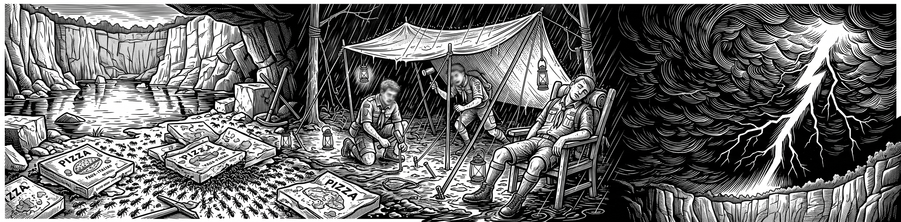
Omámené spánkem, děti nebezpečí nechápaly. Zavrtaly se hlouběji do spacáků, v pevné víře, že když nevidí bouřku, bouřka nevidí je.
Vedoucí neměli čas na vyjednávání. Děcka museli z celty doslova vysypat na zem.
Pak přišel chaos. Blesky, vítr, provazy, plachta a liják. Poslední uzly jsme dotahovali promáčení na kost.
Ráno bylo zase pohádkově krásně. Slunce sušilo zem – a odhalilo spoušť.
Naše krabice od pizzy byly rozmočené a pokryté armádou mravenců.
Hladové děti to neodradilo. Mravence z pizzy sfoukaly, oklepaly, kousky ohřály nad ohněm a snědly.
Zachránily, co se dalo. Ale tahle lekce bolela.
Sviští pravidlo č. 7: Celta se staví za světla. Ne za blesků.
Na bivaku se vždycky připrav na tu nejhorší variantu – i když je obloha jako z pohádky. Počasí se tě neptá.
Mít hlídku se vyplatí - dává oddílu čas a šanci zareagovat dříve, než přijde nebezpečí. Ale tato výhoda funguje jen tehdy, když hlídka jedná hned, jakmile si něčeho všimne.
Fakt nechceš uprostřed bouřky v panice vysypávat kamarády ze spacáků a po hmatu stavět přístřešek.
A jídlo? To v přírodě nikdy neleží jen tak. Ráno by z něj byla mravenčí kolonie – nebo něco většího.
Výzva: Postav celtu do pěti minut. Nacvič si to na schůzce, za světla. V bouřce už na učení nebude čas.
táborové písně
G
1. Už vyplouvá loď "John B",
už vyplouvá loď "John B",
okamžik malý jen,
D
než poplujem v dál.
G G7
R: Tak nechte mě plout, - nechte mě plout
C C7
tak nechte mě plout, - nechte mě plout
G D7
Sil už málo mám,
G
tak nechte mě plout.
G
2. Nejdřív jsem se napil,
na zdraví všem připil,
vím, že cesta má
D
konec už má.
R: Tak nechte mě plout...
G
3. Sklenici svou dopil,
za krátko u mne byl,
okovy na ruce dal
D
a pistole vzal
G G7
R*: Šerif John Stone, - šerif Stone
C C7
šerif John Stone, - šerif Stone
G D7
Moji svobodu vzal
G
šerif John Stone.
1. Už vyplouvá loď "John B"...
R: Tak nechte mě plout...
Hádě se podívala Jasovi přímo do očí.
Usmála se.
A olízla rampouch.
Bylo to v prosinci, těsně před Vánoci, kdy do Jizerských hor dorazila opravdová zima. Sníh ležel tak vysoko, že jsme si cestu museli prošlapávat vlastními těly. Děcka byla v sedmém nebi – svahy patřily bobům a les vypadal jako ze severské ságy.
Na zamrzlých skalách nás pak čekal ten největší poklad. Ze skalních převisů visely obrovské rampouchy a v zimním slunci se třpytily jako diamanty.
„Neničte to, vždyť je to nádherné!" křičeli jedni.
Ti druzí neodolali. Rampouchy olamovali, nakládali je na boby jako kořist – a začali je olizovat.
„Přestaňte s tím! Hoďte to na zem!" zahřměl Jaso. „Podívejte se, kudy ta voda tekla, než zamrzla! Po hlíně, po skalách, po zemi! Je to špinavé!"
A tehdy se ozvala skautská rebelie.
Hádě měla ve tváři napsáno: „Mně se přece nemůže nic stát. Já ten led porazím."
S výrazem drsného survivalisty rampouch demonstrativně olízla.
Trest přišel do dvou hodin.
Jen co jsme dorazili na chatu, Hádětin vítězný úsměv zamrzl. Bakterie z rampouchu jí zaútočily na žaludek.
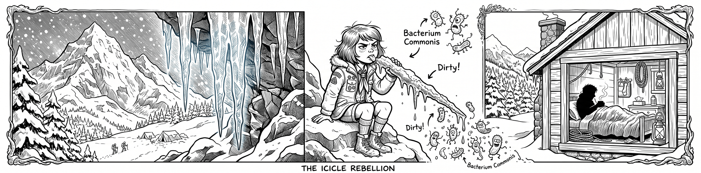
Konec zábavy. Hádě odmítala jídlo. Nechtěla si hrát. Kytara ji nezajímala. Jen tiše ležela v posteli, schoulená do klubíčka, zatímco chatař Peppa kolem ní běhal jako polní lékař.
Byl to smutný pohled na padlého hrdinu.
Ale pro oddíl to byl důležitý den. Hádě se totiž v podstatě obětovala – a od té doby už nikoho olizování rampouchů nelákalo.
Sviští pravidlo č. 8: Nejez nic, co teklo po zemi.
Voda, která stéká po povrchu, s sebou bere lesní prach, hlínu, ptačí trus a bakterie. Mráz je nezabije – jen je zakonzervuje do podoby lákavého ledového lízátka.
Rampouch není zimní poklad. Rampouch je zmrzlá špína ve tvaru diamantu.
Výzva: Máš na výpravě žízeň? Napij se z čutory. Kdo si vezme plnou čutoru na každou akci, ten nikdy nemusí olizovat rampouchy.
Dvakrát nás potok porazil.
Napotřetí jsme vyhráli. Zatím.
Košíkovský potok na cestě ze Slunečného vršku do lesoparku byl roky noční můrou každého, kdo ho chtěl přeskočit. Mnozí Svišti tu skákali přes vodu poprvé v životě. A brzy jsme si všimli, že úplně stejně riskují i lidé ze sídliště.
Skautské srdce to nevydrželo.
„Postavíme tu most. No... aspoň lávku."
První lávka vyrostla v noci, vlastníma rukama. Byla úzká – kočárek po ní neprojel – a hlavně stála moc nízko nad vodou.
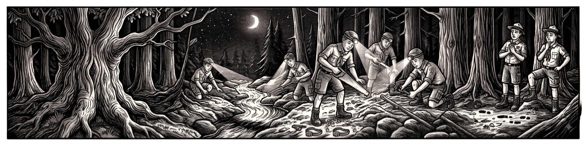
Netrvalo dlouho a přišla velká voda. Potok se změnil v hnědé monstrum a lávku spláchl do neznáma.
Svišti to nevzdali.
Nažhavili jsme pily, nařezali desky z palet a na podzim, zase v noci, postavili Druhou lávku. Širší. Vyšší. Pevnější. Ještě během stavby ji nadšeně testovali lidé ze sídliště. Objevila se dokonce na Mapy.cz pod hrdým jménem „Skautská lávka".
Byli jsme na sebe pyšní až po koruny stromů.
Pak přišla další bouřka. Voda stoupla výš než kdy předtím a s řevem odnesla i druhou lávku.
Dvě nula pro potok.
Tady by to běžný smrtelník vzdal.
Ale skauti nejsou běžní smrtelníci.
Do boje nastoupili starší skauti z celého střediska v rámci noční hry. V temnotě svítily čelovky, řezaly pily, vrčely utahováky a vzduchem létaly nápady. Šlo do toho všechno – všechna moudrost i všechen vztek z prohraných soubojů.
Třetí lávka stojí dodnes.
Postavili jsme ji o 60 centimetrů výš, než byl předchozí rekord. Širokou, masivní, plynule navazující na terén – projede po ní i ten největší kočárek.
Košíkovský potok byl poražen.
Sviští pravidlo č. 9: Nevzdávej to po prvním. Ani po druhém.
První pokus nemusí vyjít. Ani druhý. To není ostuda – to je normální.
Když ti spadne lávka (nebo plán), sedni si, zjisti, co bylo špatně, spoj se s partou a postav to znovu. Širší, pevnější a o šedesát centimetrů výš.
Výzva: Přejdi po Skautské lávce a najdi si ji na mapě. Postavily ji děti – a někteří z nich jsou v oddíle dodnes.
Do vzletu policejního vrtulníku zbývala jediná minuta.
Nad Hostivařským lesoparkem měla začít pátrací akce s termovizí. Na sídlišti stálo pět policejních aut.
A čtrnáctiletá Panda v té chvíli seděla úplně sama na pařezu. V naprosté tmě. Bez telefonu a bez čelovky.
Přitom to začalo jako obyčejná noční hra.
Byl březen 2025, osmá přespávačka v klubovně Gánek. Družiny dostaly zašifrovanou zprávu, ve které jasně stálo, kam mají jít: na Hostivařské hradiště.
Jenže před klubovnou vypuklo šílenství.
Kluci pod vedením Skládka zprávu rozlouskli a vyrazili do tmy. Ti věděli, kam běží. Ostatní se rozběhli za nimi. Nerozluštili nic – prostě předpokládali, že první skupina ví, co dělá.
Znáš to. Když všichni běží, běžíš taky. I když netušíš kam.
Rychlejší brzy utekli pomalejším. Panda a Sojka zůstávaly pozadu.
Vedoucí Flym šel s odstupem jako poslední pojistka, aby se všichni dostali do cíle. V dálce ještě zahlédl, jak se Sojka s Pandou rozdělily. Rozběhl se za nimi – ale za zatáčkou už nikdo nebyl. Sídliště zelo prázdnotou a za cestou začínal temný les.
Vtom mu zazvonil telefon. Sojčina máma. Právě teď?
„Sojka se vám ztratila, tak mi zavolala z mobilu. Čeká vás před Albertem."
Sojka se ztratila a našla během tří minut. Jenže o Pandě nevěděl nikdo nic.
Flym dal vědět Jasovi, vyzvedl Sojku a prošel s ní sídliště i uličky mezi domky. Nic. Jako by se po Pandě slehla zem.
Jaso mezitím dorazil s hlavní skupinou na hradiště. Přepočítal děti.
Ticho.
Panda chyběla.
Ta v tu chvíli stála sama na křižovatce před lesoparkem. Zamyslela se: „Asi máme jít tam, kam chodíme nejčastěji." A vyrazila. Na opačnou stranu – na Korzárskou louku.
Jaso okamžitě ukončil hru. Svišti se rozdělili do hlídek, pročesávali ulice a křičeli do tmy Pandino jméno.
Les mlčel.
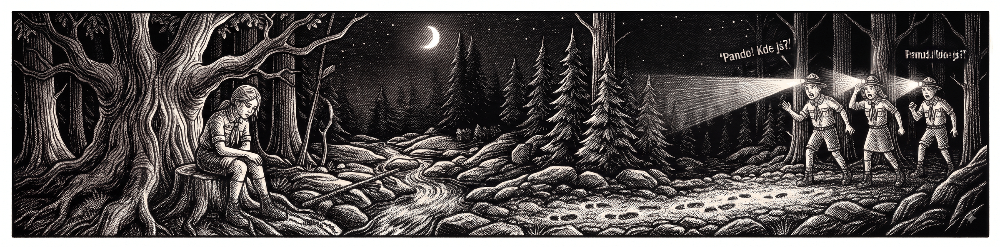
Vedoucí zavolali Pandinu tatínkovi. Ten dorazil během pár minut a společně kontaktovali policii. Pět policejních aut. Velitel zásahu. Oficiální pátrání. A vrtulník s termovizí připravený vzlétnout.
A co dělala celou tu dobu Panda?
Došla potmě na Korzárskou louku. Nikdo tam nebyl. Vrátila se tedy kousek zpátky přes Skautskou lávku a sedla si na pařez. Chvíli čekala. Pak si řekla, že už čekala dost, a vydala se ke klubovně.
Se Skládkovou hlídkou, která šla prohledávat právě tenhle kus parku, se minula o pouhých pět minut.
Před klubovnou zatím velitel zásahu rozhodl: vrtulník poletí. Stačil jediný povel do vysílačky.
Vtom se po chodníku přiblížila pomalá, unavená postava.
Panda.
Když se skautské hlídky vracely ke klubovně, viděly už jen policejní auta odjíždět po Bratislavské. U klubovny stála Panda s rodiči. Živá, zdravá, v dobré náladě.
Pro ni to byla nečekaná zkouška odvahy. Pro zbytek oddílu nejdelší večer v historii Svišťů.
Sviští pravidlo č. 10: Nikdy neběž za davem, když sám nevíš kam.
Dostaneš zašifrovanou zprávu? Nejdřív ji v klidu rozlušti. Teprve pak se rozbíhej.
Když poběžíš slepě za jinou skupinou a ztratíš ji, ztratíš zároveň i směr. A zůstaneš v lese sám.
Nevíš, kudy dál? Zastav se a zeptej se vedoucího. Držet se spolu je stokrát důležitější než vyhrát hru.
Výzva: Zapamatuj si tři věci, které jdou na noční hru vždycky do kapsy: čelovka, telefon, kamarád. Kvůli zapomenuté čelovce nemá startovat vrtulník.
Brontosauři
Ami
1. Příroda se k spánku chystá,
hnědne listí, zima jistá,
G Ami
přesto slyšíš na cestách tulácký písně hrát.
2. Svetr navíc, rána studí,
když tě první mrazík vzbudí,
teplej čaj, než rozhlédneš se, a zas o kousek dál.
C G
R: Tak jako vítr, trochu jak blázen,
Dmi Ami
ženeš to nocí, ostatní spí,
C G
nevidíš nebe, nevidíš na zem,
F Ami
vidíš pár lidí, co pochopí.
3. Z poezie paneláků,
šedejch zdí a metra vlaků
na nádraží pospícháš, aby sis spravil chuť.
4. Když se mlhy v lese zvednou,
známé tváře k ohni sednou,
ze smutnýho Babylonu zbyde jenom suť.
R:
Waldemar Matuška
Ami C
1. Po zasmušilé pustině jel starý honec krav,
Ami C
den temný byl a ševelil větrem ve stéblech trav,
Ami
tu honec k nebi pohleděl a v hrůze zůstal stát,
Dmi F Ami
když z rozedraných oblaků viděl stádo krav se hnát.
C Ami Dmi F Ami
R: Jupija héj,jupija hou, to přízraky táhnou tmou.
2. Ten skot měl nohy z ocele a oči krvavé
a na bocích mu plápolaly cejchy řežavé.
A oblohou se neslo jeho kopyt dunění
a za ním jeli honáci až k smrti znavení.
R: Jupija héj...
3. Ti muži byli sinalí a kalný měli zrak
a marně stádo stíhali, jak mračno stíhá mrak.
A proudy potu máčely jim tvář i košili
a starý honec uslyšel jejich jekot kvílivý.
R: Jupija héj...
4. Tu jeden honec zavolal a pravil: "Pozor dej",
svou duši hříchu uvaruj a ďáblu odpírej,
bys nemusel pak po smrti se věčně věků štvát
a nekonečnou oblohou to stádo s námi hnát.
R: Jupija héj...
Čechomor
Ami G C
Darmo sa ty trápíš můj milý synečku
E Ami
nenosím ja tebe nenosím v srdéčku
G C G C Dmi E Ami
A já tvoja ne bu du ani jednu hodinu
Copak sobě myslíš má milá panenko
vždyť ty si to moje rozmilé srdénko
A ty musíš býti má lebo mi tě Pán Bůh dá
A já sa udělám malú veverečkú
a uskočím tobě z dubu na jedličku
Přece tvoja nebudu ani jednu hodinu
A já chovám doma takú sekérečku
ona mi podetne dúbek i jedličku
A ty musíš býti má lebo mi tě Pán Bůh dá
A já sa udělám tú malú rybičkú
a já ti uplynu preč po Dunajíčku
Přece tvoja nebudu ani jednu hodinu
A já chovám doma takovú udičku
co na ni ulovím kdejakú rybičku
A ty přece budeš má lebo mi tě Pán Bůh dá
Ami F C F C G Ami F C F C G
A já sa udělám tú velikú vranú
a já ti uletím na uherskú stranu
Přece tvoja nebudu ani jednu hodinu
A já chovám doma starodávnú kušu
co ona vystřelí všeckým vranám dušu
A ty musíš býti má lebo mi tě Pán Bůh dá
A já sa udělám hvězdičkú na nebi
a já budu lidem svítiti na nebi
Přece tvoja nebudu ani jednu hodinu
A sú u nás doma takoví hvězdáři
co vypočítajú hvězdičky na nebi
A ty musíš býti má lebo mi tě Pán Bůh dá
Ami F C F C G Ami F C F C G
Kluků bylo víc.
Prohráli na celé čáře.
Byl červen 2025 a naše půlroční etapová hra o osidlování Ameriky se blížila k vrcholu. Na Korzárské louce se měl odehrát střet, který přepíše mapu Nového světa: Válka za nezávislost. Armáda dívek v červeném proti batalionu kluků v modrém.
Zbraně? Historické předovky – tedy kartonové repliky, které gumičkou vystřelovaly papírové kuličky. Dostřel mizerný. Přesnost tragická. Kulička letěla, kam chtěla.
A přesně o tom to celé je.
Ve skutečné bitvě s předovkami nerozhodovala přesnost. Rozhodovalo něco úplně jiného:
Kdo udrží nervy. Kdo zůstane stát v řadě. Kdo poslechne rozkaz.
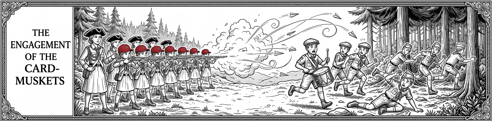
Dívčí armáda fungovala jako hodinky.
Pod velením rádkyně Trixi – která držela disciplínu pevněji než železná opona – postupovaly červené řady krok za krokem.
„Nabít! Zamířit! Pal!"
A ozvala se salva. Jedna. Společná. Pak disciplinovaný krok vpřed. Nebo taktický ústup mimo dostřel.
Na druhé straně bojiště, v modrých řadách, mezitím vypukla anarchie.
Velitel Tjutju křičel rozkazy. Nikdo je neposlouchal.
Jeden střílel bez míření. Druhý utíkal. Třetí brečel v trávě. Oddílový bubeník se zoufale snažil bubnovat aspoň nějaký rytmus, ale bylo pozdě.
Modrá formace se rozpadla na prach.
V posledním aktu zoufalství kluci jen bezmocně salutovali a padali k zemi jeden po druhém.
Červené vojsko je zahnalo hluboko do lesa.
Kluci utrpěli historickou porážku. Vzpamatovávali se z ní hodně dlouho.
Sviští pravidlo č. 11: Drž linii. Panika prohrává vždycky.
Nevyhrávají ti nejrychlejší. Ani ti nejhlasitější. Vyhrávají ti, kteří udrží chladnou hlavu a drží spolu jako jeden tým.
Ve chvíli, kdy každý začne dělat něco jiného, je konec – i kdyby vás bylo dvakrát tolik.
Výzva: Až se příště v týmu něco pokazí, nekřič. Najdi svého velitele, poslechni jeden rozkaz a proveď ho pořádně. Uvidíš, co to udělá s ostatními.
Flym byl ten večer jediný člověk na Broadwayi, který se díval na Hamiltona – a nakonec vůbec netušil, co pro svobodu Ameriky znamenal.
V roce 2025 naše výprava překročila oceán. Cílem byl skutečný americký skautský tábor. Ale ještě než jsme vstoupili do amerických lesů, čekala nás divočina jiného druhu: New York City. Mrakodrapy, světla, hluk a kaňony ulic, ve kterých se člověk ztratí.
A uprostřed toho všeho: lístky na Hamiltona. Nejslavnější muzikál světa.
Pro nás to byla srdcovka. Vždyť přesně tohle téma – osidlování Ameriky a boj o nezávislost – jsme celý rok hráli jako etapovou hru.
Seděli jsme v luxusních sedadlech. Napjatí. Čekali, až zhasnou světla.
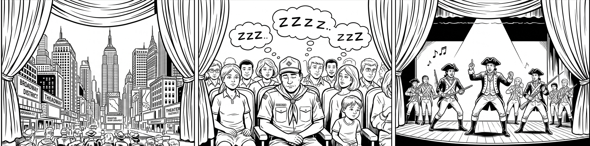
A pak se ozval nepřítel, na kterého nikdo nebyl připravený: časový posun.
Zatímco na jevišti zuřila americká revoluce, náš vedoucí Flym sváděl svůj vlastní, předem prohraný boj – s vlastními víčky.
Hlava mu klesala k hrudi.
Bum! Výstřel na jevišti. Flym trhl hlavou, na vteřinu otevřel oči, uviděl herce v paruce – a zase se propadl do tmy.
A znovu. A znovu.
Probouzel se do útržků, které nedávaly smysl: jednou někdo rapoval o ústavě, pak někdo plakal, pak se střílelo, pak byl konec světa.
Když muzikál skončil a sál vybuchl v potlesku, Flym zatleskal taky. Netušil čemu.
Lístky na Broadway stojí jmění.
Flym si za ně koupil ten nejdražší spánek svého života.
Sviští pravidlo č. 12: Kdo se nevyspí, přijde o zážitek. Ne o nudu.
Když ti vedoucí večer řekne „zalez do spacáku a spi", nedělá to proto, aby tě otrávil. Dělá to proto, aby tě nepotkalo prokletí vedoucího Flyma.
Když probdíš noc, zítřejší hra, lanovka nebo koupačka ti protečou mezi prsty. Budeš u toho – ale nic si z toho neodneseš.
Výzva: Na táboře si po večerce spočítej, kolik hodin spánku ti zbývá do budíčku. Pak se rozhodni, jestli se ještě vyplatí povídat.
Waldemar Matuška
Fm
Rec.: "Hej! Kam jedete?"
"K brodu!"
"Vemte mě kousek sebou!"
"Tak si sedněte. Hyjé!"
Fm Es
1. Plání se blíží sedm dostavníků,
Fm Es
stačí jen mávnout a jeden zastaví.
C# Bm Cm C#
Sveze mě dál za pár dobrejch slov a díků,
Bm Cm Fm
ten kočí co má modrý voči laskavý.
Fm B Es7 As
Ref: Hyja, hyja, hou! Dlouhá bude cesta,
Fm B Es7 Fm
dlouhá jako píseň, co mě napadá.
B Es7 As
Hyja, hyja, hou! Sám, když někdy stojím,
C# Bm Cm Fm
sám proti slunci, který právě zapadá.
2. Vím, že se hvězdy, dneska nerozsvítí,
neklidný ptáci maj' hlasy hádavý.
Vyprahlá tráva už velký deště cítí,
ty deště co i moje stopy zaplaví.
Ref: Hyja, hyja, hou! Dlouhá bude cesta,
dlouhá jako píseň, co mě napadá.
Hyja, hyja, hou! Sám, když někdy stojím,
sám proti slunci, který právě zapadá.
Gm, F,
Gm, F,
Es, Cm, Dm, Es,
Es, Cm, Dm, Gm
Ref: Hyja, hyja, hou! Dlouhá bude cesta,
dlouhá jako píseň, co mě napadá.
Hyja, hyja, hou! Sám, když někdy stojím,
sám proti slunci, který právě zapadá.
3. Plání se blíží sedm dostavníků,
stačí jen mávnout a jeden zastaví.
Sveze mě dál za pár dobrejch slov a díků,
ten kočí co má modrý voči laskavý.
Zdeněk Svěrák, Jaroslav Uhlíř
D Hmi
1. Jdu s děravou patou, mám horečku zlatou,
G D
jsem chudý, jsem sláb, nemocen.
Hmi G
Hlava mě pálí a v modravé dáli se leskne
A7 D
a třpytí můj sen.
2. Kraj pod sněhem mlčí, tam stopy jsou vlčí,
tam zbytečně budeš mi psát,
sám v dřevěné boudě sen o zlaté hroudě
já nechám si tisíckrát zdát.
D D7 G D A7
R: Severní vítr je krutý, počítej lásko má s tím,
D D7 G D A7 D A7
k nohám Ti dám zlaté pruty, nebo se vůbec nevrátím
:instrumental: / D / G / D / A7 /
D D7 G D A7 D B7
k nohám Ti dám zlaté pruty, nebo se vůbec nevrátím
Eb Cmi
3. Tak zarůstám vousem a vlci už jdou sem,
Ab Eb
už slyším je výt blíž a blíž.
Eb Cmi
Už mají mou stopu, už větří, že kopu
Ab B7 Eb
svůj hrob a že stloukám si kříž.
4. Zde leží ten blázen, chtěl dům a chtěl bazén
a opustil tvou krásnou tvář.
Má plechovej hrnek a pár zlatejch zrnek
a nad hrobem polární zář.
Eb Eb7 Ab Eb B7
R: Severní vítr je krutý, počítej lásko má s tím,
Eb E7 Ab Eb B7 Eb B7
k nohám Ti dám zlaté pruty, nebo se vůbec nevrátím
:instrumental: / Eb / Ab / Eb / B7 /
Eb Eb7 Ab Eb B7 Ab Eb
k nohám Ti dám zlaté pruty, nebo se vůbec nevrátím
Jan Nedvěd
D G
1. U stánků na levnou krásu,
D Gmi
postávaj a smějou se času,
D A7 D
s cigaretou a s holkou co nemá kam jít.
D G
2. Skleniček pár a pár tahů z trávy,
D Gmi
uteče den jak večerní zprávy,
D A7 D
neuměj žít a bouřej se a neposlouchaj.
G A7
R: Jen zahlídli svět maj na duši vrásky
D Gmi
tak málo je, málo je lásky
D A7 D
ztracená víra hrozny z vinic neposbírá.
3. U stánků na levnou krásu
postávaj a ze slov a hlasů
poznávám jak málo jsme jim stačili dát.
G A7
R: Jen zahlídli svět maj na duši vrásky
D Gmi
tak málo je, málo je lásky
D A7 D
ztracená víra hrozny z vinic neposbírá.
R:
Spirituál kvintet
G Emi
1. V nohách mám už tisíc mil,
Ami C
stopy déšť a vítr smyl
Ami D G D
a můj kůň i já jsme cestou znaveni.
2. Těch tisíc mil, těch tisíc mil
má jeden směr a jeden cíl,
jeden cíl, to malý bílý stavení.
3. Je tam stráň a příkrej sráz,
modrá tůň a bobří hráz,
táta s mámou, kteří věřej' dětskejm snům.
4. Těch tisíc mil, těch tisíc mil
má jeden směr a jeden cíl,
jeden cíl, ten starej známej bílej dům.
5. V nohách mám už tisíc mil,
teď mi zbejvá jen pár chvil,
cestu znám, a ta se k nám dál nemění.
6.=2.
7. Kousek dál, a já to vím,
uvidím už stoupat dým,
šikmej štít střechy čnít k nebesům.
Emi Ami D G
8.=4. + [: jeden cíl, ten starej známej bílej dům ... :]
Vločka otevřela oči.
Deset centimetrů od její hlavy seděl na kufru černobílý tvor s huňatým ocasem.
Mýval.
Byl červenec 2025 a naše skautky se ocitly uprostřed divočiny v americkém Camp Sequassen. Bydlely v tamní specialitě – dřevěných chatách, kterým chybí celá přední stěna. Jsi uvnitř a venku zároveň. Noční les ti dýchá přímo do tváře.
Tmu kolem hlídají mývalové, skunci – a občas se rozezní varovný zvon, který znamená jediné: medvěd.
Vedoucí vydali před spaním jasný rozkaz:
„Žádné jídlo v chatách! Zvířata mají neuvěřitelný čich. Když něco ucítí, přijdou si pro to. Je jim úplně jedno, že tam spíte. Sladkosti patří do kovových skříní mimo tábor!"
Jenže touha po tajném nočním mlsání byla silnější než strach.
Některé holky si sladkosti schovaly hluboko do zavazadel. Přímo vedle postelí.
Netušily, že batoh není pro lesní zvíře překážka. Je to dárkové balení.
A pak přišla noc – a útok na dvou frontách.
V první chatě ztuhla Vločka hrůzou. Mýval čenichal stopu cukru pár centimetrů od její tváře. Jeden špatný pohyb a odpálí svou chemickou zbraň, která by chatu zamořila na roky.
Vločka polohlasně vykřikla. Mýval se lekl, seskočil z kufru a zmizel ve tmě.
Vyhráno? Ne. Vedle se zrovna kradl batoh.
Do chaty Pandy se vplížil maskovaný bandita lesa – mýval. Jeho šikovné prsty nahmátly batoh, ucítily kořist – a začaly ho táhnout ven, do lesa.
Panda se probudila přesně ve chvíli, kdy jí batoh mizel ze dveří.
Neváhala ani vteřinu. Vyskočila z postele a vrhla se do noci za zlodějem.
Nastal americký wrestling: skautka versus mýval, přetahovaná o popruhy batohu.
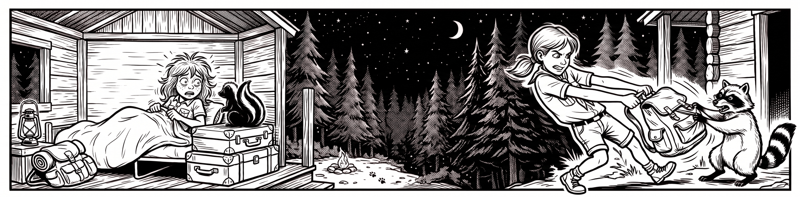
Panda chytila batoh. Mýval se kořisti vzdát nechtěl.
Do bitvy musela zasáhnout až vyděšená vedoucí, která Pandu rázně okřikla ať toho nechá a zaleze zpátky do chaty – přetahovat se s divokou šelmou o batoh není soutěž, kterou chceš vyhrát, pokud se nejsi připraven na kousance.
Batoh byl zachráněn. Noční klid v Connecticutu už ne.
Sviští pravidlo č. 13: Jídlo nepatří tam, kde spíš.
Sladkosti nejsou nebezpečné jen pro zuby. Jsou hlavně cítit – a to na velkou dálku. To, co ty ucítíš na metr, zvíře ucítí přes celý tábor.
A s divokou zvěří se o jídlo nikdy nepřetahuj. Batoh se dá koupit nový. Ty ne.
Výzva: Než večer zalezeš do spacáku, prohledej si batoh a kapsy. Jediný zapomenutý bonbon stačí na to, aby ti v noci někdo přišel na návštěvu.
Jaromír Nohavica
C
1. V řadě za sebou tři čuníci jdou,
Ami
ťápají si v blátě cestou - necestou,
Dmi G
kufry nemají, cestu neznají,
Dmi G
vyšli prostě do světa a vesele si zpívají: uí uí uí ...
2. Auta jezdí tam, náklaďáky sem,
tři čuníci jdou, jdou rovnou za nosem,
žito chřoupají, ušima bimbají,
vyšli prostě do světa a vesele si zpívají: uí uí uí ...
3. Levá, pravá - teď!, přední, zadní - už!,
tři čuníci jdou, jdou jako jeden muž,
lidé zírají, důvod neznají,
proč ti malí čuníci tak vesele si zpívají: uí uí uí ...
4. Když kopýtka pálí, když jim dojde dech,
sednou ke studánce na vysoký břeh,
kopýtka máchají, ušima bimbají,
chvilinku si odpočinou, a pak dál se vydají: uí uí uí ...
5. Když se spustí déšť, roztrhne se mrak,
k sobě přitisknou se čumák na čumák,
blesky blýskají, kapky pleskají,
oni v dešti, v nepohodě vesele si zpívají: uí uí uí ...
6. Za tu spoustu let, co je světem svět,
přešli zeměkouli třikrát tam a zpět
v řadě za sebou, hele, támhle jdou,
pojďme s nima zazpívat si jejich píseň veselou: uí uí uí ..
Sojka schytala šest žihadel.
Bylo to její první bodnutí v životě.
Byl říjen 2025, chata U Psího zubu na Sázavě, a Svišti hráli druhé kolo své oblíbené hry Káně. Adrenalin, maskování, plížení mezi stromy a spadaným listím.
Nikdo z hráčů si nevšiml jedné maličkosti.
Jedna z krycích pozic ležela přímo nad podzemním hnízdem vos.
Stačilo pár rychlých kroků. Zdupaná hlína.
A vosí armáda vyrazila do protiútoku.
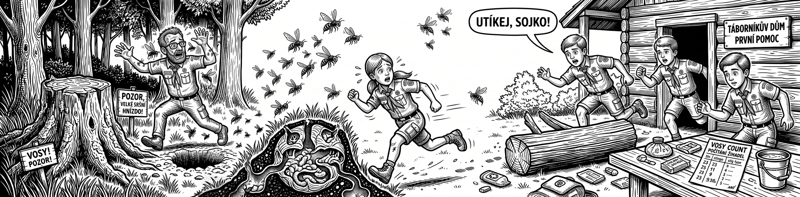
Sojku zasáhly jako první. Šest žihadel najednou.
Do rány vběhl vedoucí Flym, aby situaci zachránil – a dopadl úplně stejně. Dalších šest.
Hra okamžitě skončila. Následovalo chlazení, ošetřování a utěšování. Sázavské vosy toho dne ukázaly svou divokou tvář.
Sviští pravidlo č. 14: Než si sedneš, podívej se, kam si sedáš.
V lese se dívej pár metrů před sebe. Zapoj periferní vidění a všímej si, jestli nad zemí nelétá podezřele hodně hmyzu.
Vosy si hnízda staví pod zemí – v dírách po hraboších, ve starých pařezech, pod padlým dřevem. Někdy ani nelétají. Jen lezou po zemi kolem svého vchodu.
Teprve když je prostor čistý, můžeš si sednout nebo lehnout.
A když už žihadlo schytáš? Život tím nekončí. Naopak – je to jedinečná šance ukázat, že umíš překonat bolest. Všichni se dívají. I v téhle chvíli můžeš zůstat klidný a být hrdinou. Nebo hrdinkou.
Výzva: Než si příště v lese sedneš, počítej do tří a rozhlédni se. Tři vteřiny tě můžou ušetřit šesti žihadel.
Hop Trop
Předehra: Dmi 2x
Dmi C Ami
1. Dávám sbohem břehům proklatejm,
Dmi Ami Dmi
který v drápech má ďábel sám,
Dmi C Ami
bílou přídí šalupa "My Grave"
Dmi Ami Dmi
míří k útesům, který znám.
Dmi Ami F C Ami
R: Jen tři kříže z bílýho kamení
Ami Dmi Ami Dmi
někdo do písku poskládal,
Ami F C Ami
slzy v očích měl a v ruce znavený,
Ami Dmi Ami Dmi
lodní deník, co sám do něj psal.
2. První kříž má pod sebou jen hřích,
samý pití a rvačky jen,
chřestot nožů, při kterým přejde smích,
srdce kámen a jméno "Sten".
R:
3. Já, Bob Green, mám tváře zjizvený,
štěkot psa zněl, když jsem se smál,
druhej kříž mám a spím pod zemí,
že jsem falešný karty hrál.
R:
4. Třetí kříž snad vyvolá jen vztek,
Faty Rodgers těm dvoum život vzal,
svědomí měl, vedle nich si klek' ...
Rec: Snad se chtěl modlit:
"Vím, trestat je lidský,
ale odpouštět božský,
snad mi tedy Bůh odpustí ..."
R1: Jen tři kříže z bílýho kamení
jsem jim do písku poskládal,
slzy v očích měl a v ruce znavený,
lodní deník a v něm, co jsem psal.
Spirituál kvintet
Capo II
předehra pro solo 2 kytara
Ami, G, Ami, G, Ami,
Ami, G, F, Ami, E, Ami
Ami G Ami
1. Máš všechny trumfy mládí a ruce čistý máš,
Dmi Ami E Ami
jen na tobě teď záleží, na jakou hru se dáš.
Ami E E7 Ami
R: [:Musíš za svou pravdou stát, musíš za svou pravdou stát :]
2. Už víš, kolik co stojí, už víš, co bys' rád měl,
už ocenil jsi kompromis a párkrát zapomněl
R:[:Že máš za svou pravdou stát,že máš za svou pravdou stát :]
3. Už nejsi žádný elév, co prvně do hry vpad',
už víš, jak s králem ustoupit a jak s ním dávat mat.
R:[:Takhle za svou pravdou stát,takhle za svou pravdou stát :]
4. Teď přichází tvá chvíle, teď nahrává ti čas,
tvůj sok poslušně neuhnul - a ty mu zlámeš vaz!
R: [:Neměl za svou pravdou stát,neměl za svou pravdou stát :]
5. Tvůj potomek ctí tátu, ty vštěpuješ mu rád
to heslo, které dobře znáš z dob, kdy jsi býval mlád.
6. Máš všechny trumfy mládí a ruce čistý máš,
jen na tobě teď záleží, na jakou hru se dáš
R: [:Musíš za svou pravdou stát, musíš za svou pravdou stát :]
2x
Bylo to během deštivého červnového víkendu v roce 2024, konkrétně od 15. do 16. června, kdy Svišti vyrazili na svou v pořadí 9. víkendovou výpravu na tajuplné Kokořínsko. Celý den lilo jako z konve, les byl nasáklý vodou a terén prověřoval morálku celého oddílu. Našli jsme útočiště přímo pod mohutným pískovcovým bradlem, v suchých skalních převisech, které nás chránily před neutichajícím deštěm.
Když se ráno protnulo s chladným lesním vzduchem, většina skautů se ze svých teplých spacáků zvedala jen velmi neochotně. Ne tak Alice. Ta se probudila s neuvěřitelnou energií a okamžitě chtěla přiložit ruku k dílu. Měla před sebou dvě obrovské osobní výzvy: nesmírně toužila pomoct s ranním úklidem bivaku, ale zároveň měla gigantický hlad a ze všeho nejvíc na světě chtěla k snídani sníst své natvrdo uvařené vajíčko.
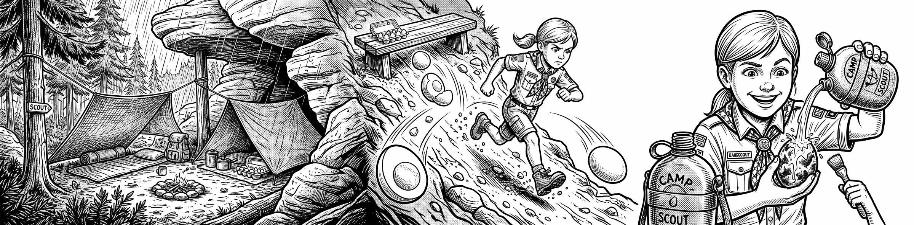
A tehdy to přišlo. Alice, poháněná touhou okamžitě pomáhat, udělala osudovou chybu – potřebovala si na vteřinu uvolnit ruce, a tak své drahocenné vajíčko položila na nešťastně nakloněnou dřevěnou lavičku.
Vajíčko nečekalo ani vteřinu. Nabralo směr a začalo se bleskově kutálet dolů z lavičky, přímo na strmý svah pod bradlem. Letělo, poskakovalo po kořenech a nabíralo šílenou rychlost dolů z kopce. Celý oddíl ztuhl a všichni s otevřenou pusou koukali, co se stane.
Alice se však odmítla vzdát své snídaně i svého odhodlání. S divokým startem se bezhlavě vrhla dolů ze srázu za ním. Byl to napínavý závod mezi gravitací a skautskou vytrvalostí. Alice vajíčko nakonec dole v korytě úspěšně dostihla a zachránila. Bylo sice kompletně obalené černým popelem z ohniště, prachem a drsným pískovcovým pískem, ale bylo celé!
Všichni sledovali, co udělá teď. Alice si vajíčko vítězoslavně vynosila zpátky nahoru do bivaku, klidně ho omyla čistou vodou z čutory, oloupala a do posledního drobečku snědla.
Když se tvoje vajíčko (nebo tvůj životní plán) skotálí z kopce a obalí se špínou, prachem a popelem, nikdy to nevzdávej!
Správný skaut se nezroutí při první katastrofě. Seber veškeré odhodlání, rozběhni se dolů ze svahu, bojuj o to, co je tvoje, a když je to potřeba, omyj to čistou vodou a dokonči, co jsi začal. Vytrvalost a akčnost, jakou ukázala Alice, dokáže překonat jakýkoliv strmý kopec i pískovcovou špínu!
1. vydání ze dne: 11. 7. 2026
sestavil: Samuel Zubo - Jaso
technické spracování: Jan Kapusta - Flym